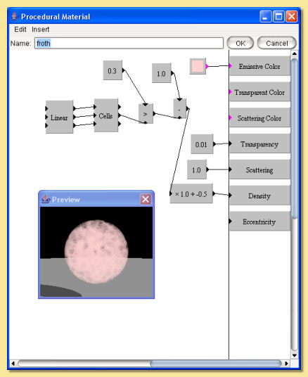

|  |
This 'froth' material is based around the cells pattern which produces a random set of 'feature points'.
The second output of this is the distance of the point from the nearest feature point. The greater than
function is used to produce a 1 if this is less than 0.3 and 0 otherwise; i.e. those point within a distance
of 0.3 result in a 1 and everywhere else is 0, resulting in circles of radius 0.3 around the feature points.
These are the 'bubbles' which need to have 0 density so the map is reversed by subtracting it from 1. Now
we have zero value for the 'bubbles' and 1 everywhere else and this is fed into the density property. A slight
scaling/shifting is also applied to get a better look. Scattering is set to a maximum of 1 so that light is all scattered. Transparency is set to 0.01, i.e. almost opaque. Finally, a uniform pink colour is set as the Emissive Color which gives the froth a basic pink colour. |